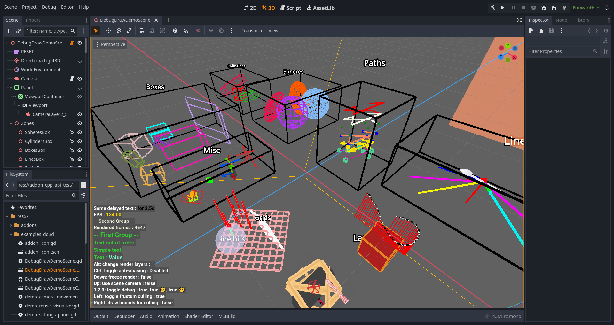

|
Debug Draw 3D 1.6.0
Draw 3D debug graphics and 2D overlays with this add-on.
|
|
Debug Draw 3D 1.6.0
Draw 3D debug graphics and 2D overlays with this add-on.
|
This is an add-on for debug drawing in 3D and for some 2D overlays, which is written in C++ and can be used with GDScript or C#.
DD3DDemo.tscn in editor 
DD3DDemo.tscn in play mode
3D:
2D:
Overlay:
Precompiled for:
This addon supports working with several World3D and different Viewports. There is also a no depth test mode and other settings that can be changed for each instance.
This library supports double-precision builds, for more information, see Double Precision.
To download, use the Godot Asset Library or use one of the stable versions from the GitHub Releases page.
For versions prior to 1.4.5, just download one of the source codes in the assets. For newer versions, download debug-draw-3d_[version].zip.
Your support adds motivation to develop my public projects.